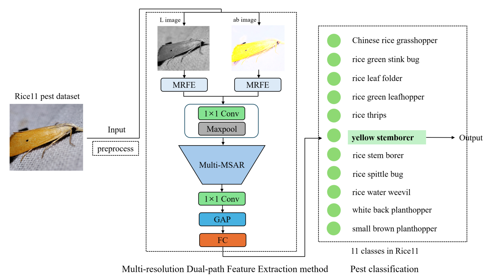
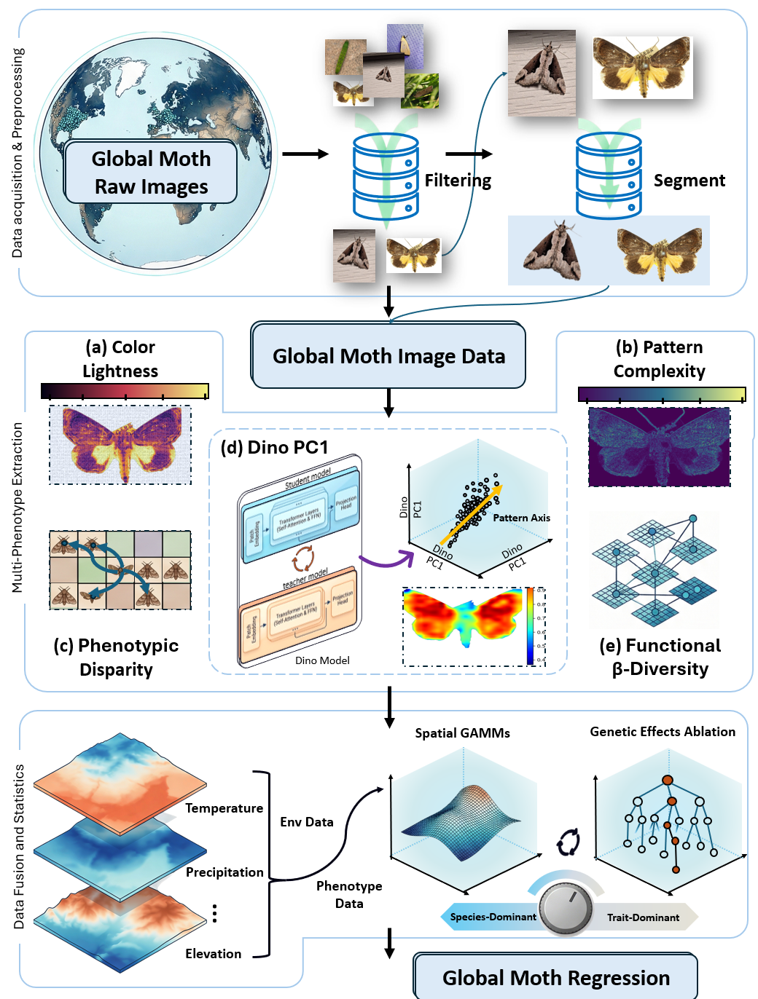
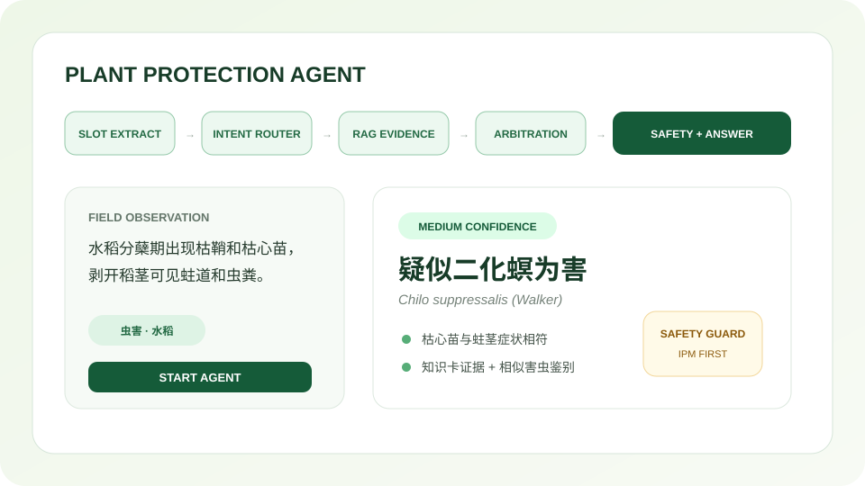

AI Application PM · AI Native Builder · 浙江大学
将复杂业务问题，转化为
可落地的 AI 产品
我是俞凯杰，浙江大学硕士在读。关注 AI 应用产品、Agent 工作流、多模态识别与 AI 工具化落地。
具备从业务调研、策略文档、模型评估、全栈 MVP 开发到生产交付的闭环经验。
关于我
我的定位不是单纯产品经理，也不是纯算法工程师，而是能把 AI 能力落到真实业务流程中的应用型产品候选人。
我理解 AI 应用产品经理的核心价值，不是简单把模型接入产品，而是判断真实业务中哪些问题值得 AI 化，
能否被数据和模型表达，模型能力如何转化为用户可用的产品流程，并最终通过效率、准确率、留存、转化等指标验证价值。
我的经历覆盖 AI 工具全栈落地、C 端增长、多模态 AI 科研与数据基建。
曾独立负责多款生产侧 AI 工具从 0 到 1 落地，也参与过四模态联合识别大模型、细粒度害虫识别系统和 30 万级视觉数据流水线建设。
AI 产品
Agent
Function Call
Prompt Engineering
多模态 AI
全栈 MVP
数据分析
用户增长
5+
AI 工具独立交付
90%+
模型识别准确率
5s
单次识别耗时
30万+
视觉数据流水线样本
实习经历
围绕 AI 应用落地、用户增长和服务产品 0-1 的实践经历。
-
独立负责多款生产侧 AI 工具从需求调研、策略文档、产品设计、全栈开发、模型部署到生产交付的完整闭环。
-
深入生产一线调研，梳理用户意图、典型场景、异常样本和人工判断标准，将非标业务需求转化为 PRD、Roadmap 和验收指标。
-
规划昆虫识别、植物性状识别、生信分析三类 AI 工具，设计数据输入、模型推理、结果展示、人工复核和反馈迭代链路。
-
独立完成前端、后端、模型推理接口封装、API 调用与部署联调，实现 AI 应用从需求到交付的单人闭环。
-
工具上线后，虫害鉴定 / 性状识别单次耗时降至 5 秒内，识别准确率达 90%+。
-
参与海外拼图休闲小游戏产品迭代与增长，负责竞品分析、用户行为数据分析、需求文档撰写和跨部门推进。
-
基于用户画像、行为路径和留存数据，识别真实高黏性用户为海外中老年群体，推动 V2 定位调整为适老化陪伴型游戏。
-
设计互动陪伴宠物、壁纸解锁和图库浏览等机制，将激励视频入口调整为“奖励驱动 + 情感反馈 + 内容解锁”。
-
V2 上线后首周留存率提升 15%，平均在线时长延长 12 分钟，IAA 广告观看时长增长 25%。
-
参与公司从单一学科辅导向综合升学服务转型，负责用户访谈、市场调研、服务产品设计和线下转化闭环搭建。
-
将非标准化教育咨询服务产品化，设计生涯规划、面试辅导、升学路径诊断等服务包。
-
孵化垂直升学 IP「锐哥说升学」，构建内容获客、私域沉淀、线下讲座、咨询转化闭环。
-
新业务上线周期控制在 4 周内，讲座单场私域线索转化率达到 18%，意愿客单价由约 5000 元提升至约 20000 元。
AI Demo Lab
用真实项目样例体验模型输入、处理流程与结果解释；新增农业世界模型与植保智能体研究原型。
节肢动物目标检测
查看真实 YOLO 标注如何转化为目标框、类别与业务结果。
运行检测 Demo →
夜蛾智能识别
体验从标本图像到物种名称、拉丁学名与分类路径的识别链路。
运行识别 Demo →
蛋白序列分析
粘贴 FASTA 序列，在浏览器本地完成格式校验与组成特征可视化。
分析 FASTA →
农业世界模型
调节水分、氮素与气象胁迫，观察玉米/大豆生长轨迹和反事实结果。
运行场景推演 →
植保智能体
体验从田间描述到证据检索、诊断仲裁、主动追问和安全校验的完整链路。
启动智能体 →
精选项目
从 AI 工具、Agent 工作流、多模态模型到数据流水线的代表项目。
AI 生产力工具矩阵
面向农业生产中的虫害鉴定、植物性状识别和生信分析任务，独立完成 AI 工具从需求调研、产品设计、全栈开发到部署交付。

AI Tool
Full-stack MVP
Model API
Badcase Analysis
SABridge 四模态联合识别大模型
整合图像、DNA 序列、形态文本和分类标签，构建农业垂直领域多模态识别系统，支持图搜图、文搜图、图文联合检索。

Multimodal AI
Prompt Engineering
Zero-shot
Cross-modal Retrieval
水稻田间害虫细粒度识别系统
构建近 10 万张害虫图像数据集，设计细粒度识别模型与端云协同链路，为自动化巡田机器人提供识别与预警能力。

CV
Fine-grained Recognition
MaxViT
Edge-Cloud
生物多样性综合数据平台
独立全栈开发的数据展示与分析平台，用于生物多样性相关数据的可视化展示、查询与管理。

Full-stack
Data Platform
Visualization
Web App
AgriWorld 农业世界模型
物理机理引导的可微分农业世界模型，融合水分、氮素、辐射、物候与阶段胁迫专家，支持玉米和大豆的县域生长模拟与反事实因子分析。

World Model
Differentiable ODE
Physics-guided
Counterfactual
Plant Protection Agent 植保智能体
面向虫害、病害、药害、营养等多意图场景的农业智能体，以多 Skill 编排、RAG 证据检索、诊断仲裁和安全护栏构建可追问的专业工作流。

AI Agent
Multi-Skill
RAG
Safety Guard
技能栈
覆盖 AI 产品、模型评估、数据分析、全栈 MVP 与跨团队协作。
AI 产品能力
场景梳理、用户意图分类、理想态定义、Skill 定义、工具调用链路设计、AI 能力评估、Badcase 归因、策略文档输出。
LLM / Agent
理解 LLM、Agent、Function Call、Tool Use、RAG、多轮对话、工作流编排、Prompt Engineering 与模型能力边界。
Coding Agent / 全栈 MVP
熟悉 Cursor、Claude、ChatGPT 等工具，能独立完成前端页面、后端接口、模型推理封装、API 调用与部署上线。
数据分析
熟练使用 Python 进行数据清洗、统计分析和可视化；掌握 SQL 基础，可进行分类占比、漏斗、留存与用户分层分析。
多模态 / CV
具备多模态对齐、图搜图、文搜图、细粒度识别、CLIP、YOLOv10、DINOv2、MaxViT 等相关项目经验。
产品基本功
用户访谈、竞品分析、PRD 撰写、需求评审、项目推进、跨团队沟通、上线验收、数据复盘与商业化设计。
论文 / 专利
AI+垂直领域方向的科研产出。
SABridge: 四模态联合识别大模型
第一作者投稿至
Computers and Electronics in Agriculture
，当前状态：Under Review。
关键词：Multimodal Learning, Cross-modal Retrieval, Prompt Engineering, Zero-shot Recognition
查看论文 / 摘要
全球表型组学高通量分析系统
第一作者投稿至
Nature Ecology & Evolution
，当前状态：Under Review。
关键词：DINOv2, CLIP, YOLOv10, High-throughput Phenotyping, AI Metric
查看论文 / 摘要
水稻田间害虫细粒度识别系统
国家发明专利 1 项，支撑自动化巡田机器人害虫识别与预警能力。
查看专利